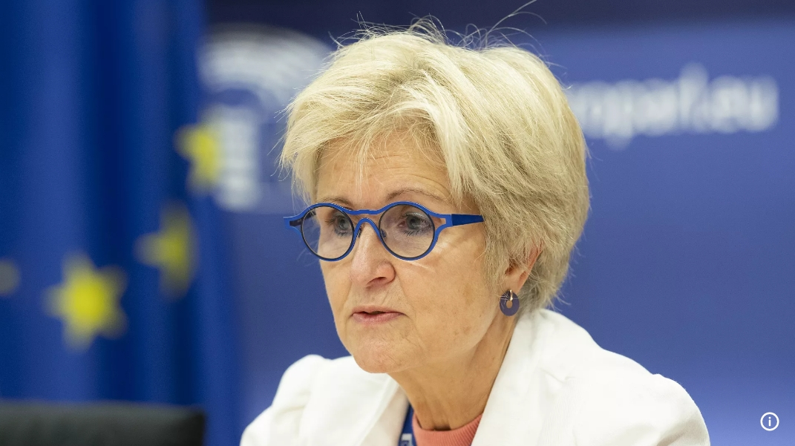
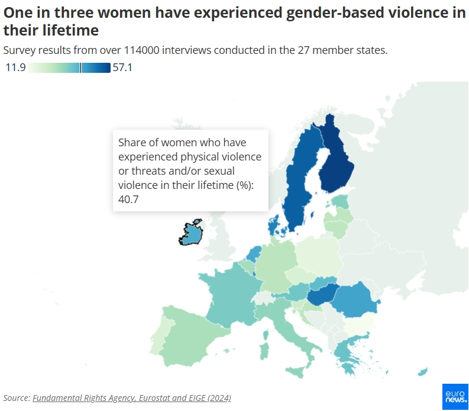

Women's parity vital to EU competitiveness drive,
says agency director
Publish on 16/12/2024
By. Paula Soler & Marta Iraola

The gender employment gap costs the EU €370 billion a year.
“If the EU truly wants to become more competitive, gender equality should play a crucial role”
the director of the European Institute for Gender Equality told Euronews.
Key Points:
- Stagnant Women's Participation:
Little improvement in women's participation in the European labor market over the past decade.
- Economic Loss:
The gender employment gap costs the EU €370 billion a year.
- Work Disparities:
Women work fewer hours, do more unpaid care work, and are in lower-paying jobs. Men dominate higher-paying sectors like technology and finance.
- Breaking Stereotypes:
Need to break stereotypes about gender roles starting from school.
- Care Responsibilities:
Many women can't work due to care duties, more so than men.
- Economic Independence:
Paid work reduces the risk of violence for women by providing economic independence.
- Work-Life Balance:
EU countries need to help both men and women balance work and home life.
- Effective Quotas:
Binding quotas for women on company boards in some countries have been effective.
The European labor market still faces challenges in achieving gender equality.
Women's participation and segregation have shown little improvement over the past decade,
resulting in untapped economic potential for the region.
According to Carlien Scheele, director of the European Institute for Gender Equality (EIGE),
the gender employment gap in the EU is 10.8%, costing the bloc €370 billion annually.
Women tend to work fewer hours than men, take on more unpaid care duties, and dominate lower-paying fields like healthcare, education, and social work.
In contrast, men are more prevalent in higher-paying sectors such as technology, engineering, and finance.
To address this issue, stereotypes about gender roles must be broken early, starting in schools,
as suggested by Davide Barbieri, a statistics officer at EIGE. He emphasized that traditional views, such as women being only caregivers or teachers and men being engineers or statisticians, need to change.
Care responsibilities remain a significant barrier to women's full participation in the workforce.
Nearly one in three women outside the labor force cannot work due to caregiving duties,
compared to only one in ten men. This gap is even more pronounced among couples with children, where
only 66% of women are employed full-time compared to 92% of men.
The consequences extend beyond economic loss. The EIGE's Gender Equality Index 2024 highlights that
economic independence from paid work can reduce the risk of physical, sexual, and psychological violence
against women.

"If you are fully dependent on your partner because you have no income or not enough income when you step out of the relationship, you can't cope," Scheele stated.
To avoid such scenarios, the EIGE director stressed the need for member states to ensure that men and women across the EU have all the mechanisms they need to reconcile work and private life.
Gender binding quotas show results
Women's participation in leadership roles across industries, business, science, and sports remains low, reflecting
slow progress in gender equality.
To address this,
some EU countries have implemented binding quotas
for women on company boards, which have proven effective.
2024 Index reveals that countries like Austria, Belgium, France, Germany, Greece, Italy, the Netherlands, and Portugal not only met but exceeded their quota targets
in the first half of the year. This success is part of a strategy initiated in 2012 by the European Commission to improve gender balance in boardrooms. As a result,
now hold a record-high 33% of board positions in the largest listed companies.
However, challenges persist in other areas of daily life. The
gender pay gap remains at 13%,
and progress in health and knowledge is still slow. While
half of the EU scored above 70 out of 100 on the Gender Equality Index, only Sweden scored above 80.
EIGE Director Carlien Scheele warns that the EU's vision of a "union of equality" is still far from reality. She emphasizes that
equality is essential for the EU to remain competitive,
especially in the face of global challenges and the rise of anti-gender narratives.
Want to Read More ? Click here 👆 !